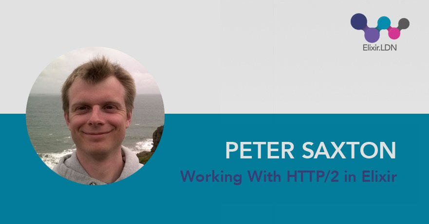

Working with HTTP/2 in Elixir
HTTP/2 is a major revision to the HTTP protocol. This latest version aims to maintain the semantics of HTTP while improving performance. However several of these improvements make upgrading existing servers challenging. With this in mind, Peter has built a server to take advantange of all the new features of HTTP/2, it's called Ace. The Ace server supports only HTTP/2 built entirely in Elixir.
In this talk, Peter will provide a summary of the features of HTTP/2. He will then explain how Ace makes these features available to application developers and show us what is needed to increase adoption of HTTP/2 in the Elixir Ecosystem.
I gave this talk at Elixir.LDN.